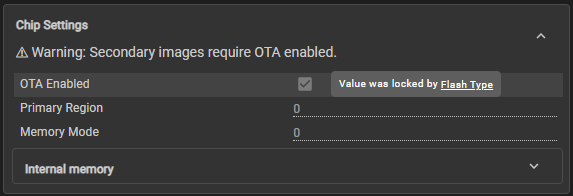

Over the Air Update (OTA)¶
The CC35xx device leverages ARM PSA (Platform Security Architecture) libraries to perform OTA updates. PSA is the new standard for OTA security in ARM devices, read more about it at https://www.psacertified.org/ The CC35xx follows the Firmware Update (FWU) specifications and APIs created by ARM. https://arm-software.github.io/psa-api/fwu/ The following is the flow of an Over the Air Update.
OTA Container States¶
To support OTA updates, two slots are allocated for most entities stored on the flash (e.g. TI bootloader, application, TI wireless firmware, etc). The primary slot will contain the active version of the entity and the secondary slot is reserved for storing new copies that are loaded during the OTA process (for validating and testing). This enables a reliable OTA solution where the device is always able to return to the current working version if the OTA is interrupted or fails. You can choose to only update one entity or multiple at the same time via OTA.
The picture below depicts the format of the image and servicepack containers. The image container holds the application code and the servicepack container holds the TI wireless firmware. Each will have a primary and secondary slot (4 total).
Note that the image container addresses are shown in Memory Overview
{kind=link}
- Additional Details:
- Container Manifest: Has metadata about a GPE image and includes header and version
- Vendor TLVs: Type-Length-Value but we do not support this yet
- Container Trailer: Records update progress, swap status, and slot status
| OTA Container State | Description |
|---|---|
| Ready | The second container slot is ready for a new Firmware update to be started |
| Writing | When writing is complete, the image becomes a Candidate for installation |
| Candidate | Container slot has been filled, it can now be set to be the next active image |
| Staged | Container Slot has been set to be the active image, next time the device reboots |
| Trial | The Update is now the active image running in trial mode. It requires the trial to be explicitly accepted to make the update permanent. If rejected the container is marked and image is reverted to previous container |
| Failed/Rejected | An update to a new image has been attempted, but has failed, or been cancelled for some reason |
| Updated | New image has passed trial and container slot becomes the new valid image while the previous is cleaned |
OTA Process¶
{kind=link}
The graphic above shows a state machine of the OTA process.
- First a call to the function psa_fwu_init(void) must be done to set the secondary slot to the Ready state.
- If there is an update available and the slot is Ready (can be checked with psa_fwu_query), psa_fwu_start(component, *manifest, manifest_size) will begin the OTA process and validate the Container Manifest
Note
Call psa_fwu_clean(component) before any psa_fwu_start call
- If the start command passes, we can then move onto psa_fwu_write(component, image_offset, *block, size_t block_size) which writes a firmware image (or part of a firmware image) to the slot. This will move the container to the Writing stage. Once writing is complete, calling the function psa_fwu_finish(component) will move the Container onto the Candidate stage and mark the firmware image in the GPE slot as ready for installation.
- In the Candidate stage can now choose to stage this container to be used as the next active image by calling psa_fwu_install(void). This will move the Container to the Staged state
- Once Staged the CC35xx device will require a reboot to load the newly updated container. This is done by calling fwu_request_reboot(). Rebooting will move the Container to the Trial stage.
- In the Trial stage the device is tested by the vendor. If rejected, the Container slot will become invalid and a reboot will revert to the previous Container slot and image. If accepted, the Container slot will be set to be the new primary slot and move to the Updated stage on the next reboot by calling fwu_request_reboot(void). The previous container slot becomes the secondary slot and needs to be cleaned with psa_fwu_clean(component).
To see what state of the OTA process the container is at anytime call the psa_fwu_query(component, *info) command. The OTA process can be rejected at any stage with psa_fwu_cancel(component) once the update has begun till the time it is Updated, in which the GPE firmware image update status will be marked as FAILED. When you are in the trial stage, you cannot cancel the “update” unless you trigger self reboot, in which you would then call psa_fwu_cancel(component).
Important Arguments Explained¶
- psa_fwu_component_t component:
- either the primary or secondary vendor slot
- psa_fwu_component_info_t *info:
- the output value that gives you information about the component ie. state, whether it is primary or secondary slot etc.
- const void *manifest:
- contains GPE header, version etc.
- size_t image_offset:
- the offset of the data block in the whole image (see XMEMWFF3_write in psa_fwu.c)
- const void *block:
- data block
- size_t manifest_size:
- Size of the manifest defined by TI_FWU_MANIFEST_SIZE which refers to the size of the PSA_FWU_GPESlot_t struct declared in psa_fwu.h
Enabling OTA¶
To enable OTA in your project you must change the following setting in the Memory Map section of the sysconfig file.
{kind=link}
For a 4MB Flash, enabling this checkbox will create space for a second container, however, it will configure each container image size to 1078KB from the original 2752KB. This will also automatically update the slots addresses in the ti_flash_map_config.c. You can find more information in the Memory section of the user guide.
Note
When using a 8MB, 16MB, or 32MB Flash, OTA is automatically enabled and the setting in SYSCFG will be locked.

OTA & NVS Region¶
Content stored in the NVS region may be modified during an OTA, but the NVS region is not designed to be updated as a complete unit. Therefore, only a single region in the flash is allocated for the NVS and the application is responsible for managing it (i.e. performing create, read, write, delete operations). For more information on updating the NVS region via the NVOCMP driver, please see here.
OTA Limitations¶
- You cannot redefine flash sizes or PSRAM presence ie. cannot start with “no PSRAM” configured on a stacked device and then OTA to “enable PSRAM”, nor can you indicate a larger or smaller flash chip size
- You cannot OTA different interface settings between the CC35xx and flash chip
- You cannot OTA a different OTFDE to redefine what is and isn’t encrypted in the flash region
- You cannot redefine if code is allocated to secure or non-secure calable region
- You cannot change flash partitions via OTA (i.e. flash map and entity sizes are fixed forever)
- You cannot OTA the boot sector
- If a device currently does not support factory image restoration, you cannot OTA this capability when it is supported afterwards because you are OTA-ing a functionality that was previously programmed based on an SDK that could not handle factory image restoration